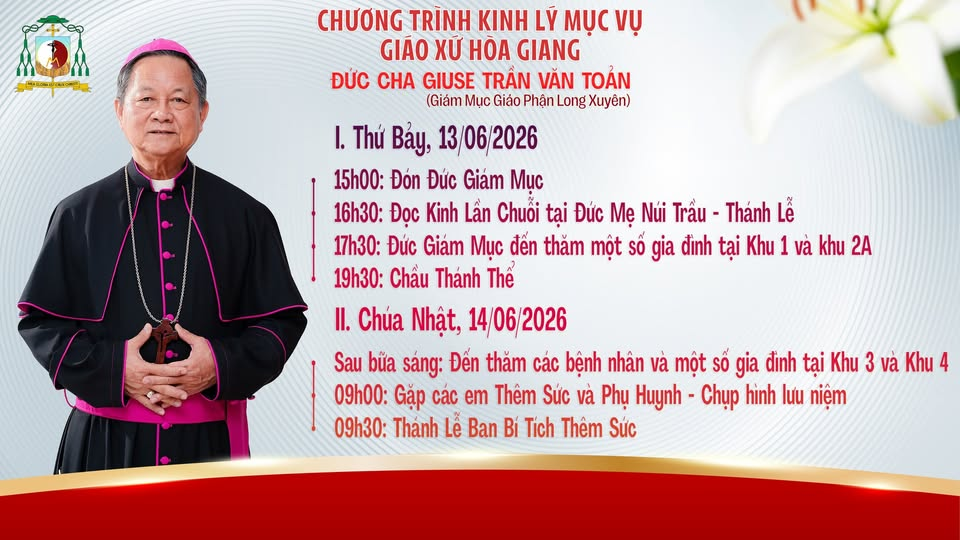

Nguyện xin ơn Chúa Thánh Thần xuống trên các em đón nhận Bí Tích Thêm Sức hôm nay, để các em luôn vững vàng trong đức tin, can đảm làm chứng nhân cho Tin Mừng và tích cực dấn thân xây dựng cộng đoàn giáo xứ ngày càng phát triển hiệp nhất trong tình yêu Chúa.
Thông Báo
CHƯƠNG TRÌNH KINH LÝ MỤC VỤ & THÁNH LỄ BAN BÍ TÍCH THÊM SỨC

Hôm nay, Giáo xứ Hòa Giang hân hoan chào đón chương trình Kinh Lý
Mục Vụ và Thánh Lễ Ban Bí Tích Thêm Sức do Giáo phận Long Xuyên cử
hành cho các em thiếu nhi trong giáo xứ.